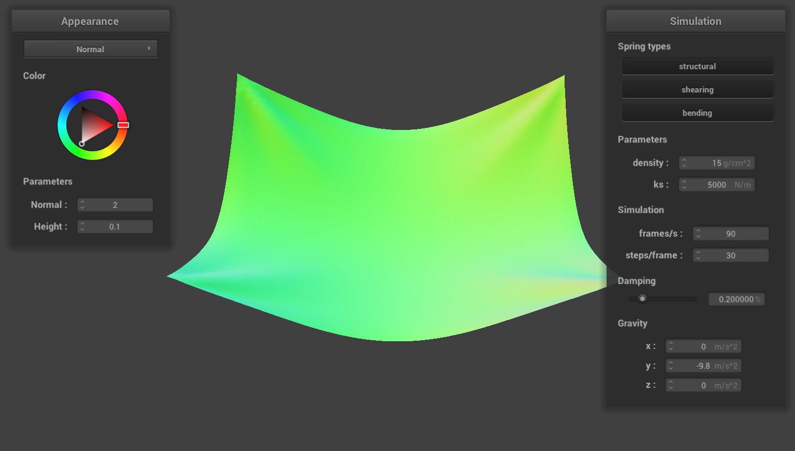

CS184/284A Spring 2025 Homework 4 Write-Up
Link to webpage: link
Link to GitHub repository: that's me !
Overview
Give a high-level overview of what you implemented in this homework. Think about what you've built as a whole. Share your thoughts on what interesting things you've learned from completing the homework. In this homework, I implemented a cloth simulator. I implemented concepts from prior homeworks like sphere/ray intersection and implementing different shading models. I also learned how to model fabric and different materials in a way that I didn't think they'd be--that is, using vertices and springs--which I thought was very cool.Part 1: Masses and springs

|
TL: Everything. TR: just shear. BL: only shear. BR: close up of mesh
Part 2: Simulation via numerical integration
pinned4.json
At a low ks, the cloth behaves very stiffly. It falls without much deformation to a resting state with few wrinkles. At a high ks, the cloth almost rebounds when it falls. There's much more motion, and the final resting state is very smooth.
At a low density, the fabric--at least in pinned4.json, does not fall nearly as much as at a high density. The fabric stretches less. And at a high density, the fabric seems much heavier. The fabric also ripples and "rebounds" in different patterns.
For a low damping, the fabric ripples a lot and wrinkles deeply upon itself. It almost makes the fabric look "thinner", as the folds and creases are very fine. And for a high damping, there are almost no wrinkles at all. The fabric falls a lot slower and appears much smoother.
L: low ks. M: high ks. R: low damping.
Part 3: Handling collisions with other objects
L: ks=5000. M: ks=500. R: ks=50000
At ks=500: the fabric falls very tightly onto the sphere. The fabric seems to cling to it thinly. At ks=50000, it falls a lot more loosely; the wrinkles look much larger and the fabric almost looks thicker as a result.
plane.json
For handling intersection with spheres: I found the location of the point mass relative to the sphere. Then, I checked whether it was in the sphere. If it was, I found ray from the origin through the point mass to the surface of the sphere, then adjusted the position of the point mass accordingly.
Similarly for planes, I used the plane ray intersection formulas to find the point at which the point mass intersected with the plane--extending the ray from last_position to position. Then, using the dot product of that point with the position and last_position, I was able to see if the point mass had crossed it by seeing if the dot product was positive or negative. Then, I adjusted the point mass position accordingly, making sure to offset it.
Part 4: Handling self-collisions
To handle self collisions, I first had to build the hash map to hold all the point masses. I divided up the masses by modulo'ing them and assigned them to the map by treating each coordinate like how I would any other set of 3-D coordinates. That is, multiplying z by the "width" and "height" (number of separate "boxes" along those axes), multiplying y by the width, etc.
Then, in self_collide(), I fetched all the points in the same box as the point mass I was comparing them against. Then I looped through them, making sure to not compare it against itself. I found the distance between them. If the distance was less than 2 * thickness, I adjusted accordingly.
L: first contact. M: halfway. R: final resting state
At a low density, the fabric falls with much larger folds. At a high density, the fabric ripples a lot more as it falls and gathers upon itself more finely. And to the inverse, at a high ks the fabric falls with large folds. It almost seems springier; it takes a lot longer to get to a final resting state and "bounces" more than the default constants.
TL: low ks. TR: high ks. BL: low density. BR: high density.
Part 5: Shaders
A shader program controls the material properties for how an object is rendered. Through fragment and vertex shaders, we are able to control things like the reflectivity, the way light passes through the material, and the actual texture of it, like if it will look bumpy or smooth. The vertex shader affects the texture and the amount with which the surface of the object differs from the base shape. The fragment shader affects the reflectivity/light and how the object is rendered in the viewport.
The Blinn-Phong shading model is comprised of three parts: the ambient, diffuse, and specular shading. The ambient light just decribes the base shade of the object. Diffuse light creates matte shadows and highlights that are smooth. And specular light creates what look like pinpoints of light on the object; they are bright and oftentimes harsher than the other kinds of light. Controlling specularity does a lot for what kind of material an object is made out of.
TL: Blinn-Phong. TR: only ambient. BL: only diffuse. BR: only specular.
L: custom texture map on sphere/cloth. R: texture map used.
L: bump map on cloth. R: bump map on sphere.
displacement map on cloth.
TL: bump; 16. TR: displacement; 16. BL: bump; 128. BR: displacement; 128.
The different coarseness values honestly don't seem to affect how the shader reacts to the sphere that much. Perhaps it's because I'm using a shader with a much lower contrast, but even the low coarseness value picks up the subtle details in the sphere pretty well. The shine also looks fairly similar.